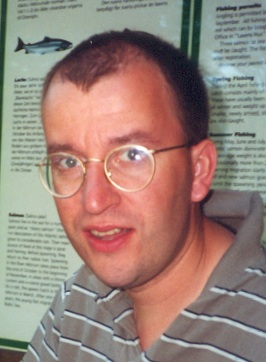
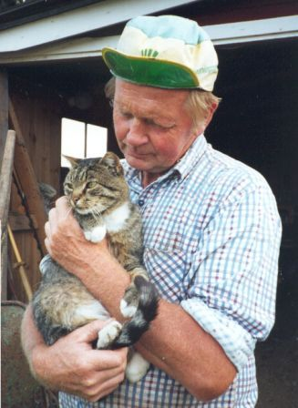
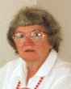

|
| |
|
Emma Sofia Eliasson 

Född 2002-02-10 i Hålegården 1, Hägrunga, Algutstorp (P). |
 F Gunnar Stefan Eliasson.
Född 1964-05-07 i Hålegården 1, Hägrunga, Algutstorp (P). Programmerare Produktionstekniker 2011-02-15 i Vårgårda [1] . |

FF Elon Gunnar Eliasson.
Född 1922-12-30 i Hålegården 1, Hägrunga, Algutstorp (P). Död 2014-01-17 i Mellomgård, Jonstorp, Hol (P) [1] . Verkstadsägare |
FFF Hjalmar Leonard Eliasson.
Född 1878-10-28 i Hålegården 1, Hägrunga, Algutstorp (P) [2] . Död 1958-11-21 i Hålegården 1, Hägrunga, Algutstorp (P) [2] . Smed |
|
FFM Dagmar Sofia Eveline Andersson.
Född 1894-08-09 i Spångakil, Ornunga (P). Död 1992 i Hålegården 1, Hägrunga, Algutstorp (P). | |||
|
FM
Eva-Britta Andersson.
Född 1936-01-22 i Bäne, Hol. Död 1990-03-22 i Hägrunga, Algutstorp. Kontorist |
FMF Gunnar Holger Matteus Andersson.
Född 1900-02-16 i Rättaregården, Bäne, Hol (P) [3] . Död 1985-01-18 i Kullingshemmet, Kullings-Skövde (P). Hemmansägare | ||
|
FMM Karin Signhild Gunhild Carlsson.
Född 1900-09-15 i Jonstorp, Hol (P). Död 1962-05-26 i Rättaregården, Bäne, Hol (P). | |||

M Lena Margareta Claeson.
Född 1969-07-29 i Mellomgården 2, Ornunga (P). Textillärare |
 MF Mats Adolf Jean Claeson.
Född 1929-03-17 i Mellomgården 2, Ornunga (P). Död 2019-12-17 i Kullingshemmet, Kullings-Skövde (P). Lantbrukare |
MFF Ernst Rudolf Adolf Claesson.
Född 1896-12-23 i Almänningen, Lida, Nårunga (P) [4] . Död 1956-09-10 i Mellomgården 2, Ornunga (P) [4] . lantbrukare | |
|
MFM Elin Viktoria Jansdotter.
Född 1889-04-30 i Hökared, Ljur (P) [4] . Död 1969-05-21 i Mellomgården 2, Ornunga (P) [4] . | |||
|
 MM Gunvor Ella Margareta Pettersson (Hallenbert) Claesson.
Född 1935-05-27 i Skjutshagen, Ornunga (P). Hemmafru |
MMF Johan Viktor Rudolf Pettersson.
Född 1889-05-04 i Skjutshagen, Ornunga (P) [5] . Död 1972 i Skjutshagen, Ornunga (P). Fabrikör | ||
|
MMM Signe Hilma Viktoria Andersson.
Född 1895-01-13 i Bergsgården, Ornunga (P) [5] . Död 1957 i Skjutshagen, Ornunga (P) [6] . |
Källor
Framställd 2021-04-08 med hjälp av Disgen version 2019.